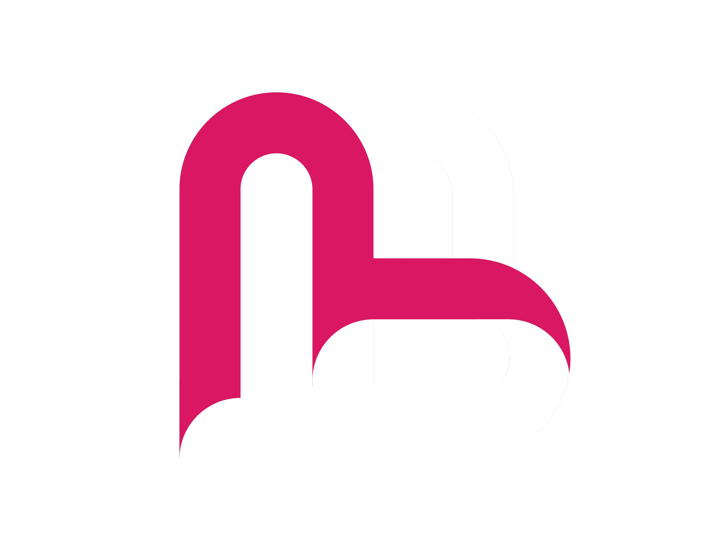

Verse Bien: Fortalecimiento del Emprendimiento Rural en Belleza
Fortalecimiento de microemprendimientos del sector belleza en zona rural: $26.4M COP gestionados, 40 unidades económicas estructuradas con Kit de Gestión Operativa, 8 cursos SENA y Fase 2 con recursos asegurados.
Contexto Inicial
Categoría: Estructuración Financiera y Desarrollo de Capacidades Rurales
Métricas de Gestión: $26.427.571 COP presupuesto gestionado | 40 beneficiarios directos | 8 cursos SENA gestionados | 1 Kit de Gestión Operativa entregado por beneficiario (Costos + Precios + Perfil Digital) | Fase 2 (Operarias/Instructoras) con recursos asegurados | Rol: Formulador y Gerente de Proyecto
Contexto: Microemprendimientos del sector belleza en zona rural operando en total informalidad. Ausencia de estructuración de costos, desconocimiento de fijación de precios y nula identidad digital, generando operaciones a pérdida y limitantes de rentabilidad.
Entregables y Alcance (Gerencia y Estructuración)
- Estructuración Financiera: Diseño e implementación de un Kit de Gestión Operativa (modelación de costos, estrategia de precios y perfil digital). Transición de 40 emprendedores informales a unidades económicas estructuradas con asignación salarial y capacidad de ahorro.
- Gestión y Alianzas: Administración de presupuesto ($26.4M COP) y gestión de 8 cursos técnicos mediante alianza SENA.
- Negociación Comercial: Gestión y aprobación de la activación regional de la línea de certificación técnica (Operario) ante el SENA, habilitando a las beneficiarias para escalar a instructoras formales en Fase 2.
- Transformación Digital: Integración de talleres de marketing visual (fotografía móvil y diseño en Canva) para egresados, garantizando capacidad de creación de marca y publicidad orgánica de costo cero.
Impacto
Impacto: 40 unidades económicas estructuradas con modelación financiera e identidad digital. Modelo de desarrollo de capacidades (costeo + marketing) replicable a cualquier oficio de servicio informal (barbería, gastronomía, etc.) en fondos de inclusión productiva.